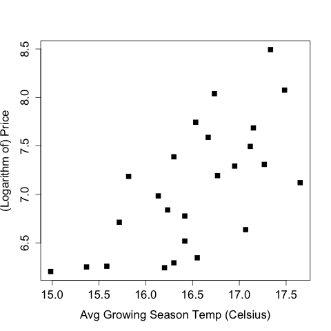
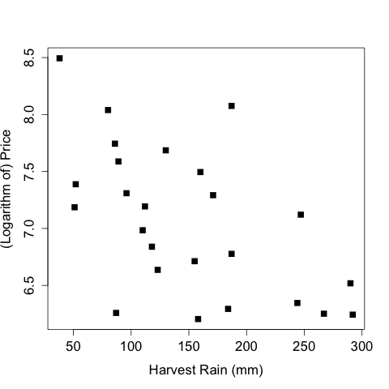
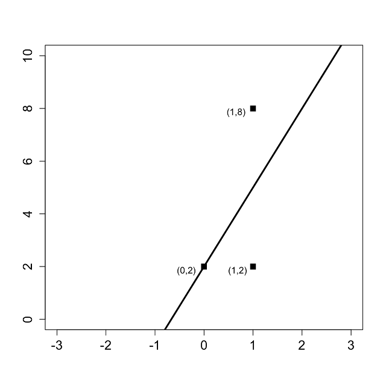

Unit 2 - Linear Regression
Table of Contents
- 1. The Statistical Sommelier: An Introduction to Linear Regression
- 1.1. Quick Question (1 point possible)
- 1.2. Quick Question (4 points possible)
- 1.3. Quick Question (1/1 point)
- 1.4. Video 4: Linear Regression in R
- 1.5. Quick Question (3 points possible)
- 1.6. Understanding the Model
- 1.7. Quick Question (2 points possible)
- 1.8. Video 6: Correlation and Multicollinearity
- 1.9. Quick Question (1 point possible)
- 1.10. Video 7: Making Predictions
- 1.11. Quick Question (1 point possible)
Linear Regression topics. For the course "MITx: 15.071x The Analytics Edge".
1 The Statistical Sommelier: An Introduction to Linear Regression
1.1 Quick Question (1 point possible)
The plots below show the relationship between two of the independent variables considered by Ashenfelter and the price of wine.


What is the correct relationship between harvest rain, average growing season temperature, and wine prices?
1.1.1 Answer
More harvest rain is associated with a lower price, and higher temperatures is associated with a higher price
1.1.1.1 Explanation
The plots show a positive trend between average growing season temperature and the wine price. While the trend is less clear between harvest rain and price, there is a slight negative association.
1.2 Quick Question (4 points possible)
The following figure shows three data points and the best fit line
y = 3x + 2.
The x-coordinate, or "x", is our independent variable and the y-coordinate, or "y", is our dependent variable.

Please answer the following questions using this figure.
x <- c(1, 0, 1); y <- c(8, 2, 2); beta0 <- rep(mean(y), 3) yHat <- (3 * x) + 2 eSqModel <- (y - yHat)^2 eSqBL <- (y - beta0)^2 data <- data.frame(x, y, yHat, eSqModel, eSqBL) writeLines("\n The baseline prediction") beta0[1] writeLines("\n The SSE for the model yHat") sum(data$eSqModel) writeLines("\n The SSE for the Baseline") sum(data$eSqBL) writeLines("\n The R^2 of the model") 1 - (sum(data$eSqModel) / sum(data$eSqBL))
The baseline prediction
[1] 4
The SSE for the model yHat
[1] 18
The SSE for the Baseline
[1] 24
The R^2 of the model
[1] 0.25
1.2.1 Question a
What is the baseline prediction?
1.2.1.1 Answer
The baseline prediction is the average value of the dependent variable. Since our dependent variable takes values 2, 2, and 8 in our data set, the average is (2+2+8)/3 = 4.
1.2.2 Question b
What is the Sum of Squared Errors (SSE)?
1.2.2.1 Answer
The SSE is computed by summing the squared errors between the actual values and our predictions. For each value of the independent variable (x), our best fit line makes the following predictions:
If x = 0, y = 3(0) + 2 = 2,
If x = 1, y = 3(1) + 2 = 5.
Thus we make an error of 0 for the data point (0,2), an error of 3 for the data point (1,2), and an error of 3 for the data point (1,8). So we have
SSE = 0² + 3² + 3² = 18.
1.2.3 Question c
What is the Total Sum of Squares (SST)?
1.2.3.1 Answer
The SST is computed by summing the squared errors between the actual values and the baseline prediction. From the first question, we computed the baseline prediction to be 4. Thus the SST is:
SST = (2 - 4)² + (2 - 4)² + (8 - 4)² = 24.
1.2.4 Question d
What is the R² of the model?
1.2.4.1 Answer
The R² formula is:
R² = 1 - SSE/SST
Thus using our answers to the previous questions, we have that
R² = 1 - 18/24 = 0.25.
1.3 Quick Question (1/1 point)
Suppose we add another variable, Average Winter Temperature, to our model to predict wine price. Is it possible for the model's R² value to go down from 0.83 to 0.80?
1.3.1 Answer
The model's R² value can never decrease from adding new variables to the model. This is due to the fact that it is always possible to set the coefficient for the new variable to zero in the new model. However, this would be the same as the old model. So the only reason to make the coefficient non-zero is if it improves the R² value of the model, since linear regression picks the coefficients to minimize the error terms, which is the same as maximizing the R².
1.4 Video 4: Linear Regression in R
Before starting this video, please download the datasets wine.csv and wine_test.csv. Save them to a folder on your computer that you will remember, and in R, navigate to this folder (File->Change dir… on a PC, and Misc->Change Working Directory on a Mac). This data comes from Liquid Assets.
A script file containing all of the R commands used in this lecture can be downloaded here.
1.4.1 Download the data sets
In this part we can download the data
library(parallel) if(!file.exists("../data")) { dir.create("../data") } fileUrl <- c("https://courses.edx.org/asset-v1:MITx+15.071x_2a+2T2015+type@asset+block/wine.csv", "https://courses.edx.org/asset-v1:MITx+15.071x_2a+2T2015+type@asset+block/wine_test.csv") fileName <- c("wine.csv", "wine_test.csv") dataPath <- "../data" for(i in 1:2) { filePath <- paste(dataPath, fileName[i], sep = "/") if(!file.exists(filePath)) { download.file(fileUrl[i], destfile = filePath, method = "curl") } } list.files("../data")
[1] "AnonymityPoll.csv" "BoeingStock.csv" "CPSData.csv" [4] "CocaColaStock.csv" "CountryCodes.csv" "GEStock.csv" [7] "IBMStock.csv" "MetroAreaCodes.csv" "ProcterGambleStock.csv" [10] "README.md" "USDA.csv" "WHO.csv" [13] "WHO_Europe.csv" "mvtWeek1.csv" "wine.csv" [16] "wine_test.csv"
1.4.2 Load the wine data set
writeLines(" Loading data into their data frames.") wine <- read.table("../data/wine.csv", sep = ",", header = TRUE) str(wine) summary(wine)
Loading data into their data frames.
'data.frame': 25 obs. of 7 variables:
$ Year : int 1952 1953 1955 1957 1958 1959 1960 1961 1962 1963 ...
$ Price : num 7.5 8.04 7.69 6.98 6.78 ...
$ WinterRain : int 600 690 502 420 582 485 763 830 697 608 ...
$ AGST : num 17.1 16.7 17.1 16.1 16.4 ...
$ HarvestRain: int 160 80 130 110 187 187 290 38 52 155 ...
$ Age : int 31 30 28 26 25 24 23 22 21 20 ...
$ FrancePop : num 43184 43495 44218 45152 45654 ...
Year Price WinterRain AGST HarvestRain
Min. :1952 Min. :6.205 Min. :376.0 Min. :14.98 Min. : 38.0
1st Qu.:1960 1st Qu.:6.519 1st Qu.:536.0 1st Qu.:16.20 1st Qu.: 89.0
Median :1966 Median :7.121 Median :600.0 Median :16.53 Median :130.0
Mean :1966 Mean :7.067 Mean :605.3 Mean :16.51 Mean :148.6
3rd Qu.:1972 3rd Qu.:7.495 3rd Qu.:697.0 3rd Qu.:17.07 3rd Qu.:187.0
Max. :1978 Max. :8.494 Max. :830.0 Max. :17.65 Max. :292.0
Age FrancePop
Min. : 5.0 Min. :43184
1st Qu.:11.0 1st Qu.:46584
Median :17.0 Median :50255
Mean :17.2 Mean :49694
3rd Qu.:23.0 3rd Qu.:52894
Max. :31.0 Max. :54602
1.4.3 Building the models
Lets begin with a model with only one variable:
1.4.3.1 One variable model
writeLines("\n :: Linear Regression (one variable)") model1 <- lm(Price ~ AGST, data = wine) summary(model1) writeLines("\n :: Sum of Squared Errors:") model1$residuals writeLines("\n :: Calculating SSE:") SSE = sum(model1$residuals^2) SSE
:: Linear Regression (one variable)
Call:
lm(formula = Price ~ AGST, data = wine)
Residuals:
Min 1Q Median 3Q Max
-0.78450 -0.23882 -0.03727 0.38992 0.90318
Coefficients:
Estimate Std. Error t value Pr(>|t|)
(Intercept) -3.4178 2.4935 -1.371 0.183710
AGST 0.6351 0.1509 4.208 0.000335 ***
---
Signif. codes: 0 '***' 0.001 '**' 0.01 '*' 0.05 '.' 0.1 ' ' 1
Residual standard error: 0.4993 on 23 degrees of freedom
Multiple R-squared: 0.435, Adjusted R-squared: 0.4105
F-statistic: 17.71 on 1 and 23 DF, p-value: 0.000335
:: Sum of Squared Errors:
1 2 3 4 5 6
0.04204258 0.82983774 0.21169394 0.15609432 -0.23119140 0.38991701
7 8 9 10 11 12
-0.48959140 0.90318115 0.45372410 0.14887461 -0.23882157 -0.08974238
13 14 15 16 17 18
0.66185660 -0.05211511 -0.62726647 -0.74714947 0.42113502 -0.03727441
19 20 21 22 23 24
0.10685278 -0.78450270 -0.64017590 -0.05508720 -0.67055321 -0.22040381
25
0.55866518
:: Calculating SSE:
[1] 5.734875
Beside it is a number labeled Adjusted R-squared. In this case, it's 0.41. This number adjusts the R-squared value to account for the number of independent variables used relative to the number of data points. Multiple R-squared will always increase if you add more independent variables.
But Adjusted R-squared will decrease if you add an independent variable that doesn't help the model. This is a good way to determine if an additional variable should even be included in the model.
We can compute the Sum of Squared Errors, or SSE, by taking the sum(model1$residuals^2). If we type SSE and hit Enter, we can see that our sum of squared errors is 5.73.
1.4.3.2 Model with two variables
writeLines("\n :: Linear Regression (two variables)") model2 = lm(Price ~ AGST + HarvestRain, data=wine) summary(model2) writeLines("\n :: Sum of Squared Errors") SSE = sum(model2$residuals^2) writeLines("\n :: Calculating the SSE") SSE
:: Linear Regression (two variables)
Call:
lm(formula = Price ~ AGST + HarvestRain, data = wine)
Residuals:
Min 1Q Median 3Q Max
-0.88321 -0.19600 0.06178 0.15379 0.59722
Coefficients:
Estimate Std. Error t value Pr(>|t|)
(Intercept) -2.20265 1.85443 -1.188 0.247585
AGST 0.60262 0.11128 5.415 1.94e-05 ***
HarvestRain -0.00457 0.00101 -4.525 0.000167 ***
---
Signif. codes: 0 '***' 0.001 '**' 0.01 '*' 0.05 '.' 0.1 ' ' 1
Residual standard error: 0.3674 on 22 degrees of freedom
Multiple R-squared: 0.7074, Adjusted R-squared: 0.6808
F-statistic: 26.59 on 2 and 22 DF, p-value: 1.347e-06
:: Sum of Squared Errors
:: Calculating the SSE
[1] 2.970373
And if you look at the R-squared near the bottom of the output, you can see that this variable really helped our model.
Our Multiple R-squared and Adjusted R-squared both increased significantly compared to the previous model.
If we type SSE, we can see that the sum of squared errors for model2 is 2.97, which is much better (less) than the sum of squared errors for model1.
1.4.3.3 Model with all variables
writeLines("\n :: Linear Regression (all variables)") model3 <- lm(Price ~ AGST + HarvestRain + WinterRain + Age + FrancePop, data=wine) summary(model3) writeLines("\n :: Sum of Squared Errors") SSE <- sum(model3$residuals^2) writeLines("\n :: Calculating the SSE for all variable model") SSE
:: Linear Regression (all variables)
Call:
lm(formula = Price ~ AGST + HarvestRain + WinterRain + Age +
FrancePop, data = wine)
Residuals:
Min 1Q Median 3Q Max
-0.48179 -0.24662 -0.00726 0.22012 0.51987
Coefficients:
Estimate Std. Error t value Pr(>|t|)
(Intercept) -4.504e-01 1.019e+01 -0.044 0.965202
AGST 6.012e-01 1.030e-01 5.836 1.27e-05 ***
HarvestRain -3.958e-03 8.751e-04 -4.523 0.000233 ***
WinterRain 1.043e-03 5.310e-04 1.963 0.064416 .
Age 5.847e-04 7.900e-02 0.007 0.994172
FrancePop -4.953e-05 1.667e-04 -0.297 0.769578
---
Signif. codes: 0 '***' 0.001 '**' 0.01 '*' 0.05 '.' 0.1 ' ' 1
Residual standard error: 0.3019 on 19 degrees of freedom
Multiple R-squared: 0.8294, Adjusted R-squared: 0.7845
F-statistic: 18.47 on 5 and 19 DF, p-value: 1.044e-06
:: Sum of Squared Errors
:: Calculating the SSE for all variable model
[1] 1.732113
we can again see that the Multiple R-squared and Adjusted R-squared have both increased.
Let's now compute the sum of squared errors for this new model. SSE equals the sum(model3$residuals^2).
And if we type SSE, we can see that the sum of squared errors for model3 is 1.7, even better than before.
Another way to build the model using all variables can be written as:
writeLines("\n :: Linear Regression (all variables)") model3 <- lm(Price ~ ., data=wine) summary(model3) writeLines("\n :: Sum of Squared Errors") SSE <- sum(model3$residuals^2) writeLines("\n :: Calculating the SSE for all variable model") SSE
:: Linear Regression (all variables)
Call:
lm(formula = Price ~ ., data = wine)
Residuals:
Min 1Q Median 3Q Max
-0.48179 -0.24662 -0.00726 0.22012 0.51987
Coefficients: (1 not defined because of singularities)
Estimate Std. Error t value Pr(>|t|)
(Intercept) 7.092e-01 1.467e+02 0.005 0.996194
Year -5.847e-04 7.900e-02 -0.007 0.994172
WinterRain 1.043e-03 5.310e-04 1.963 0.064416 .
AGST 6.012e-01 1.030e-01 5.836 1.27e-05 ***
HarvestRain -3.958e-03 8.751e-04 -4.523 0.000233 ***
Age NA NA NA NA
FrancePop -4.953e-05 1.667e-04 -0.297 0.769578
---
Signif. codes: 0 '***' 0.001 '**' 0.01 '*' 0.05 '.' 0.1 ' ' 1
Residual standard error: 0.3019 on 19 degrees of freedom
Multiple R-squared: 0.8294, Adjusted R-squared: 0.7845
F-statistic: 18.47 on 5 and 19 DF, p-value: 1.044e-06
:: Sum of Squared Errors
:: Calculating the SSE for all variable model
[1] 1.732113
Using model3 <- lm(Price ~ ., data=wine) with a dot (.) indicate to use all variables.
1.5 Quick Question (3 points possible)
In R, use the dataset wine.csv to create a linear regression model to predict Price using HarvestRain and WinterRain as independent variables.
writeLines("\n :: Linear Regression (HarvestRain and WinterRain variables)") modelQQ3 <- lm(Price ~ HarvestRain + WinterRain, data=wine) summary(modelQQ3) writeLines("\n :: Sum of Squared Errors") SSE <- sum(modelQQ3$residuals^2) writeLines("\n :: Calculating the SSE for all variable model") SSE
:: Linear Regression (HarvestRain and WinterRain variables)
Call:
lm(formula = Price ~ HarvestRain + WinterRain, data = wine)
Residuals:
Min 1Q Median 3Q Max
-1.0933 -0.3222 -0.1012 0.3871 1.1877
Coefficients:
Estimate Std. Error t value Pr(>|t|)
(Intercept) 7.865e+00 6.616e-01 11.888 4.76e-11 ***
HarvestRain -4.971e-03 1.601e-03 -3.105 0.00516 **
WinterRain -9.848e-05 9.007e-04 -0.109 0.91392
---
Signif. codes: 0 '***' 0.001 '**' 0.01 '*' 0.05 '.' 0.1 ' ' 1
Residual standard error: 0.5611 on 22 degrees of freedom
Multiple R-squared: 0.3177, Adjusted R-squared: 0.2557
F-statistic: 5.122 on 2 and 22 DF, p-value: 0.01492
:: Sum of Squared Errors
:: Calculating the SSE for all variable model
[1] 6.925756
Using the summary output of this model, answer the following questions:
What is the "Multiple R-squared" value of your model?
1.5.1 Answer
In R, create the model by typing the following line into your R console:
modelQQ4 = lm(Price ~ HarvestRain + WinterRain, data=wine)
Then, look at the output of summary(modelQQ4). The Multiple R-squared is listed at the bottom of the output, and the coefficients can be found in the coefficients table.
1.6 Understanding the Model
In the summary of the models we can see some other columns, the model coefficients and other columns.
The remaining columns help us to determine if a variable should be included in the model, or if its coefficient is significantly different from 0.
A coefficient of 0 means that the value of the independent variable does not change our prediction for the dependent variable.
If a coefficient is not significantly different from 0, then we should probably remove the variable from our model since it's not helping to predict the dependent variable.
The standard error column gives a measure of how much the coefficient is likely to vary from the estimate value.
The t value is the estimate divided by the standard error. It will be negative if the estimate is negative and positive if the estimate is positive. The larger the absolute value of the t value, the more likely the coefficient is to be significant.
So we want independent variables with a large absolute value in this column.
The last column of numbers gives a measure of how plausible it is that the coefficient is actually 0, given the data we used to build the model.
The less plausible it is, or the smaller the probability number in this column, the less likely it is that our coefficient estimate is actually 0.
This number will be large if the absolute value of the t value is small, and it will be small if the absolute value of the t value is large. We want independent variables with small values in this column.
This is a lot of information, but the easiest way in R to determine if a variable is significant is to look at the stars at the end of each row.
The star coding scheme is explained at the bottom of the Coefficients table.
Three stars is the highest level of significance and corresponds to a probability value less than 0.001, or the smallest possible probabilities.
Two stars is also very significant and corresponds to a probability between 0.001 and 0.01.
One star is still significant and corresponds to a probability between 0.01 and 0.05.
A period, or dot, means that the coefficient is almost significant and corresponds to a probability between 0.05 and 0.10.
When we ask you to list the significant variables in a problem, we will usually not include these. Nothing at the end of a row means that the variable is not significant in the model.
1.6.1 Removing non-significant variables from our model
writeLines("\n :: Remove FrancePop") model4 <- lm(Price ~ AGST + HarvestRain + WinterRain + Age, data = wine) summary(model4)
:: Remove FrancePop
Call:
lm(formula = Price ~ AGST + HarvestRain + WinterRain + Age, data = wine)
Residuals:
Min 1Q Median 3Q Max
-0.45470 -0.24273 0.00752 0.19773 0.53637
Coefficients:
Estimate Std. Error t value Pr(>|t|)
(Intercept) -3.4299802 1.7658975 -1.942 0.066311 .
AGST 0.6072093 0.0987022 6.152 5.2e-06 ***
HarvestRain -0.0039715 0.0008538 -4.652 0.000154 ***
WinterRain 0.0010755 0.0005073 2.120 0.046694 *
Age 0.0239308 0.0080969 2.956 0.007819 **
---
Signif. codes: 0 '***' 0.001 '**' 0.01 '*' 0.05 '.' 0.1 ' ' 1
Residual standard error: 0.295 on 20 degrees of freedom
Multiple R-squared: 0.8286, Adjusted R-squared: 0.7943
F-statistic: 24.17 on 4 and 20 DF, p-value: 2.036e-07
We can see that the R-squared, for this model, is 0.8286 and our Adjusted R-squared is 0.79.
If we scroll back up in our R Console, we can see that for model3, the R-squared was 0.8294, and the Adjusted R-squared was 0.7845.
So this model is just as strong, if not stronger, than the previous model because our Adjusted R-squared actually increased by removing FrancePopulation.
1.7 Quick Question (2 points possible)
Use the dataset wine.csv to create a linear regression model to predict Price using HarvestRain and WinterRain as independent variables, like you did in the previous quick question.
writeLines("\n :: Linear Regression (HarvestRain and WinterRain variables)") modelQQ3 <- lm(Price ~ HarvestRain + WinterRain, data=wine) summary(modelQQ3) writeLines("\n :: Sum of Squared Errors") SSE <- sum(modelQQ3$residuals^2) writeLines("\n :: Calculating the SSE for all variable model") SSE
:: Linear Regression (HarvestRain and WinterRain variables)
Call:
lm(formula = Price ~ HarvestRain + WinterRain, data = wine)
Residuals:
Min 1Q Median 3Q Max
-1.0933 -0.3222 -0.1012 0.3871 1.1877
Coefficients:
Estimate Std. Error t value Pr(>|t|)
(Intercept) 7.865e+00 6.616e-01 11.888 4.76e-11 ***
HarvestRain -4.971e-03 1.601e-03 -3.105 0.00516 **
WinterRain -9.848e-05 9.007e-04 -0.109 0.91392
---
Signif. codes: 0 '***' 0.001 '**' 0.01 '*' 0.05 '.' 0.1 ' ' 1
Residual standard error: 0.5611 on 22 degrees of freedom
Multiple R-squared: 0.3177, Adjusted R-squared: 0.2557
F-statistic: 5.122 on 2 and 22 DF, p-value: 0.01492
:: Sum of Squared Errors
:: Calculating the SSE for all variable model
[1] 6.925756
Using the summary output of this model, answer the following questions:
1.7.1 Question a
Is the coefficient for HarvestRain significant?
1.7.1.1 Answer
Yes.
1.7.2 Question b
Is the coefficient for WinterRain significant?
1.7.2.1 Answer
No.
From the summary output, you can see that HarvestRain is significant (two stars), but WinterRain is not (no stars).
1.8 Video 6: Correlation and Multicollinearity
We observed that Age and FrancePopulation are highly correlated. But what is correlation?
Correlation measures the linear relationship between two variables and is a number between -1 and +1. A correlation of +1 means a perfect positive linear relationship. A correlation of -1 means a perfect negative linear relationship.
In the middle of these two extremes is a correlation of 0, which means that there is no linear relationship between the two variables.
writeLines("\n :: Correlations")
cor(wine$WinterRain, wine$Price)
cor(wine$Age, wine$FrancePop)
cor(wine)
:: Correlations
[1] 0.1366505
[1] -0.9944851
Year Price WinterRain AGST HarvestRain
Year 1.00000000 -0.4477679 0.016970024 -0.24691585 0.02800907
Price -0.44776786 1.0000000 0.136650547 0.65956286 -0.56332190
WinterRain 0.01697002 0.1366505 1.000000000 -0.32109061 -0.27544085
AGST -0.24691585 0.6595629 -0.321090611 1.00000000 -0.06449593
HarvestRain 0.02800907 -0.5633219 -0.275440854 -0.06449593 1.00000000
Age -1.00000000 0.4477679 -0.016970024 0.24691585 -0.02800907
FrancePop 0.99448510 -0.4668616 -0.001621627 -0.25916227 0.04126439
Age FrancePop
Year -1.00000000 0.994485097
Price 0.44776786 -0.466861641
WinterRain -0.01697002 -0.001621627
AGST 0.24691585 -0.259162274
HarvestRain -0.02800907 0.041264394
Age 1.00000000 -0.994485097
FrancePop -0.99448510 1.000000000
From these results we can see a high correlation between Age and FrancePop independent variables.
writeLines("\n :: Remove Age and FrancePop") model5 <- lm(Price ~ AGST + HarvestRain + WinterRain, data=wine) summary(model5)
:: Remove Age and FrancePop
Call:
lm(formula = Price ~ AGST + HarvestRain + WinterRain, data = wine)
Residuals:
Min 1Q Median 3Q Max
-0.67472 -0.12958 0.01973 0.20751 0.63846
Coefficients:
Estimate Std. Error t value Pr(>|t|)
(Intercept) -4.3016263 2.0366743 -2.112 0.046831 *
AGST 0.6810242 0.1117011 6.097 4.75e-06 ***
HarvestRain -0.0039481 0.0009987 -3.953 0.000726 ***
WinterRain 0.0011765 0.0005920 1.987 0.060097 .
---
Signif. codes: 0 '***' 0.001 '**' 0.01 '*' 0.05 '.' 0.1 ' ' 1
Residual standard error: 0.345 on 21 degrees of freedom
Multiple R-squared: 0.7537, Adjusted R-squared: 0.7185
F-statistic: 21.42 on 3 and 21 DF, p-value: 1.359e-06
There is no definitive cut-off value for what makes a correlation too high. But typically, a correlation greater than 0.7 or less than -0.7 is cause for concern.
If you look back at all of the correlations we computed for our data set, you can see that it doesn't look like we have any other highly-correlated independent variables.
1.9 Quick Question (1 point possible)
Using the data set wine.csv, what is the correlation between HarvestRain and WinterRain?
writeLines("\n :: Correlations")
cor(wine$HarvestRain ,wine$WinterRain)
:: Correlations [1] -0.2754409
1.10 Video 7: Making Predictions
Our wine model had an R-squared value of 0.83, which tells us how accurate our model is on the data we used to construct the model.
So we know our model does a good job predicting the data it's seen. For this particular application, Bordeaux wine buyers profit from being able to predict the quality of a wine years before it matures.
writeLines(" Loading the wine test set into their data frame.") wineTest <- read.table("../data/wine_test.csv", sep = ",", header = TRUE) str(wineTest)
Loading the wine test set into their data frame.
'data.frame': 2 obs. of 7 variables:
$ Year : int 1979 1980
$ Price : num 6.95 6.5
$ WinterRain : int 717 578
$ AGST : num 16.2 16
$ HarvestRain: int 122 74
$ Age : int 4 3
$ FrancePop : num 54836 55110
Now we can use this data set to make some predictions
writeLines("\n :: Make test set predictions") predictTest <- predict(model4, newdata=wineTest) predictTest
:: Make test set predictions
1 2
6.768925 6.684910
Actually the predictions are very close to the real data in the test wine data set. Now we can calculate the \(R^2\) to know how good is this prediction.
writeLines("\n :: Compute R-squared")
SSE = sum((wineTest$Price - predictTest)^2)
SST = sum((wineTest$Price - mean(wine$Price))^2)
1 - SSE/SST
:: Compute R-squared [1] 0.7944278
This is a pretty good out-of-sample R-squared. But while we do well on these two test points, keep in mind that our test set is really small. We should increase the size of our test set to be more confident about the out-of-sample accuracy of our model.

The model R-squared will always increase or stay the same as we add more independent variables.
However, this is not true for the test set. When selecting a model, we want one with a good model R-squared but also with a good test set R-squared.
It looks like our model that uses AGST, HarvestRain, Age, and WinterRain does very well on the training data and on the test data.
1.11 Quick Question (1 point possible)
Which of the following are NOT valid values for an out-of-sample (test set) \(R^2\) ? Select all that apply.
1.11.1 Answer
Explanation
The formula for \(R^2\) is
\(R^2 = 1 - \frac{SSE}{SST}\),
where \(SST\) is calculated using the average value of the dependent variable on the training set.
Since \(SSE\) and \(SST\) are the sums of squared terms, we know that both will be positive. Thus SSE/SST must be greater than or equal to zero. This means it is not possible to have an out-of-sample \(R^2\) value of 2.4.
However, all other values are valid (even the negative ones!), since SSE can be more or less than SST, due to the fact that this is an out-of-sample \(R^2\), not a model \(R^2\).